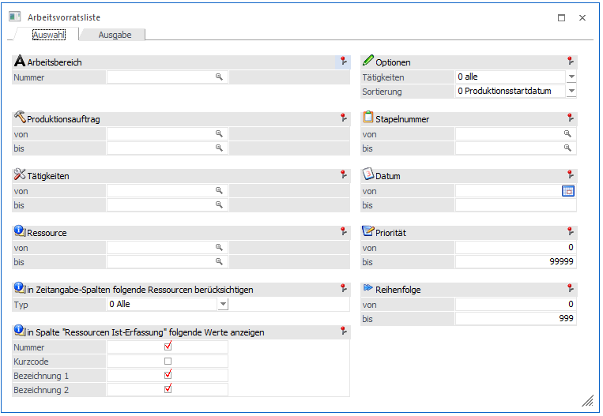
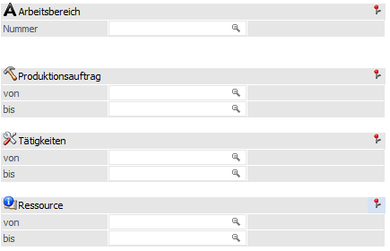
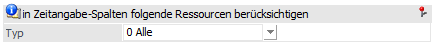
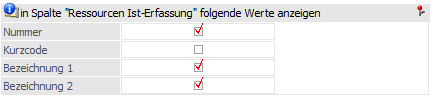
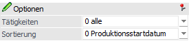
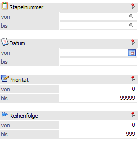
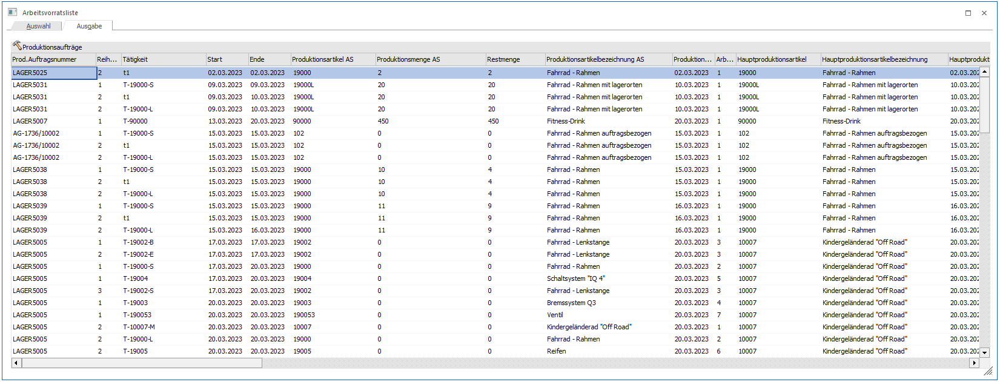
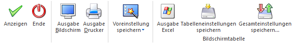

In der Arbeitsvorratsliste, welche über den Menüpunkt
1 WinLine PPS
1 Auswertungen
1 Artikelvorratsliste
aufgerufen wird, können die Produktionsaufträge angezeigt werden. Voraussetzung ist, dass in den Produktionsaufträgen Tätigkeiten verwendet werden. In der Auswertung werden nur offene Produktionsaufträge und nicht abgeschlossene Tätigkeiten ausgegeben. Die Auswertung unterteilt sich in zwei Register. Im ersten Register kann die Selektion nach dem Produktionsauftrag, Datum etc. getroffen werden. Im zweiten Register erfolgt die Ausgabe in Tabellenform. Die Auswertung kann auch auf dem Bildschirm ausgegeben werden.

Selektion

Im Bereich der Selektion kann die Ausgabe eingeschränkt werden.
Ø Arbeitsbereich
Der Arbeitsbereich kann gewählt werden und über diesen können andere Selektionen wie z.B. Ressourcen, Produktionsaufträge, Tätigkeiten vorbelegt werden.
Ø Produktionsauftrag
Selektion von bis der Produktionsaufträge
Ø Tätigkeiten
Die Selektion von / bis der Tätigkeiten für die Auswertung kann vorgenommen werden.
Ø Ressource
Für die Auswertung kann die Selektion der Ressource von / bis erfolgen.
in Zeitangabe-Spalten folgende Ressourcen berücksichtigen

Ø Typ
Aus der Auswahlbox kann die Ausgabe auf einen bestimmten Ressourcentypen eingegrenzt werden. Folgende Möglichkeiten stehen zur Auswahl:
ü 0 - Alle
ü 1 - Mitarbeiter
ü 2 - Maschine
ü 3 - Werkzeug
ü 4 - Prüfmittel
Werden mehrere Artikel gleichzeitig gebucht, werden zuerst alle V- und anschließend alle U-Buchungen durchgeführt (d.h. die zusammengehörenden Zeilen im Journal können nur durch Artikelnummer bzw. Buchungstext zugeordnet werden)
Diese Organisation dient der besseren Überschaubarkeit der Lagerwert- und Lagerstandsveränderungen.
In Spalte "Ressourcen Ist-Erfassung" folgende Werte anzeigen

Ø Nummer
Anzeige der Ressourcennummer
Ø Kurzcode
Anzeige des Kurzcodes der Ressource aus dem Ressourcenstamm
Ø Bezeichnung 1 / 2
Die Bezeichnungen der Ressource aus dem Ressourcenstamm
Optionen

Ø Tätigkeiten
Bei den Tätigkeiten kann in dem Stamm definiert werden, ob diese angedruckt werden sollen oder nicht. Zur Auswahl steht:
ü 0 - Alle
ü 1 – nur andruckbare
Ø Sortierung
Mit Hilfe dieser Option kann die Ausgabe sortiert werden. Folgende Sortierungsmöglichkeiten stehen zur Verfügung:
ü 0 - Produktionsstartdatum
ü 1 - Prod.Auftrag
ü 2 - Tätigkeit
Weitere Selektionen

Ø Stapelnummer
Auswahl von / bis der vorhandenen Stapelnummern
Ø Datum
Selektion des Zeitraums für die Auswertung. Bei dem Datum handelt es sich um das Startdatum der Tätigkeit.
Ø Priorität
Die Priorität des Produktionsauftrags kann darüber selektiert werden.
Ø Reihenfolge
Die Reihenfolge der Tätigkeit aus der Stückliste steht zur verfügung
Register Ausgabe
Beim Betätigen des Buttons Anzeigen wird in das Register Ausgabe gewechselt wo aufgrund der vorgenommenen Auswahl die offenen Produktionsaufträge angezeigt werden.

In der Ausgabe / Tabelle stehen die folgenden Spalten zur Verfügung:
ü Prod.Auftragsnummer
ü Reihenfolge
ü Tätigkeit (Tätigkeitsnummer)
ü Start (Datum Beginn der Tätigkeit)
ü Ende (Datum Ende der Tätigkeit)
ü Produktionsartikel AS (Artikelnummer des Produktionsartikels des Arbeitsschritts)
ü Produktionsmenge AS (Menge des Produktionsartikels für den Arbeitsschritt)
ü Restmenge
ü Produktionsartikelbezeichnung AS (Artikelbezeichnung des Produktionsartikels des Arbeitsschritts)
ü Produktionsdatum AS (Datum für den Aerbeitsschritt)
ü Hauptproduktionsartikel (Artikelnummer des Fertigprodukts)
ü Hauptproduktionsartikelbezeichnung (Artikelbezeichnung des Fertigprodukts)
ü Hauptproduktionsdatum 8Produktionsdatum des Fertigprodukts)
ü Kundennummer (Kontonummer von auftragsbezogenen Produktionen oder die manuell hinterlegt worden)
ü Laufnummer (die Laufnummer des Belegs aus der WinLine FAKT)
ü Hauptprod.Artikel AS
ü Druckstatus AG / AB (Druckstatus der Belegstufe Angebot und Auftrag aus WinLine FAKT)
ü Kunde AG- / AB Datum (Datum des Belegs der Belegstufe Angebot und Auftrag aus WinLine FAKT)
ü Kunde Angebotsnummer / Auftragsnummer (Belegnummer der Belegstufe Angebot und Auftrag aus WinLine FAKT)
ü Priorität Belegkopf (die Priotität aus dem Beleg der WinLine FAKT)
ü Projektnummer Beleg
ü Beleg Kommentar
ü Kunde Fakt. Anrede (Anrede aus dem WinLine FAKT Beleg (Rechnungsadresse))
ü Kunde Fakt. Name (Kontoname aus dem WinLine FAKT Beleg (Rechnungsadresse))
ü Kunde Fakt. zu Handen (zu Handen aus dem WinLine FAKT Beleg (Rechnungsadresse))
ü Kunde Fakt. Strasse (Strasse aus dem WinLine FAKT Beleg (Rechnungsadresse))
ü Kunde Fakt. PLZ (PLZ aus dem WinLine FAKT Beleg (Rechnungsadresse))
ü Kunde Fakt. Ort (Ort aus dem WinLine FAKT Beleg (Rechnungsadresse))
ü Kunde Lief. Anrede (Anrede aus dem WinLine FAKT Beleg (Liefersadresse))
ü Kunde Lief. Name (Kontoname aus dem WinLine FAKT Beleg (Liefersadresse))
ü Kunde Lief. zu Handen (zu Handen aus dem WinLine FAKT Beleg (Liefersadresse))
ü Kunde Lief. Strasse (Strasse aus dem WinLine FAKT Beleg (Liefersadresse))
ü Kunde Lief. PLZ (PLZ aus dem WinLine FAKT Beleg (Liefersadresse))
ü Kunde Lief. Ort (Ort aus dem WinLine FAKT Beleg (Liefersadresse))
ü Kunde Fakt. Strasse2 (Strasse2 aus dem WinLine FAKT Beleg (Rechnungsadresse))
ü Kunde Fakt. Staat (Staat aus dem WinLine FAKT Beleg (Rechnungsadresse))
ü Kunde Lief. Strasse2 (Strasse2 aus dem WinLine FAKT Beleg (Liefersadresse))
ü Kunde Lief. Staat (Staat aus dem WinLine FAKT Beleg (Liefersadresse))
ü Kundenbeleg Artikelnummer (kundenspezifische Artikelnummer aus der Belegmitte)
ü Kundenbeleg Artikelbezeichnung (kundenspezifische Artikelbezeichnung aus der Belegmitte)
ü Kundenbeleg Menge bestellt (Artikelmenge aus der Belegmitte)
ü Kundenbeleg Lieferdatum (Lieferdatum aus der Artikelzeile der Belegmitte)
ü Ressourcen Ist-Erfassung (Anzeige der Ressourcen mit den selektierten Feldern (In Spalte "Ressourcen Ist-Erfassung" folgende Werte anzeigen), die angezeigt werden sollen
ü Folgetätigkeit (Tätigkeit, die nach dieser Tätigkeit kommt)
ü Folgetätigkeit Reihenfolge (Reihenfolge der nächsten Tätigkeit aus der Stückliste)
ü Summe Sollzeit
ü Summe Istzeit
ü Produktionsartikel erste Ausprägung AS
ü Produktionsartikelbezeichnung erste Ausprägung AS
ü Produktionsartikel-chargen/Identnummer
ü Mat.Entnahmeschein (Druckstatus des Mat.Entnahmescheins)
ü Arbeitsschein (Druckstatus des Arbeitsscheins)
Buttons

Ø Anzeigen
Durch Drücken des Buttons "Anzeigen" wird in das Register "Ausgabe" gewechselt
Ø Ende
Durch Drücken des Buttons "Ende" bzw. der Taste ESC wird das Fenster geschlossen.
Ø Ausgabe Bildschirm
Mit Hilfe des Buttons "Ausgabe Bildschirm" oder der Taste F5 wird die Auswertung am Bildschirm ausgegeben.
Ø Ausgabe Drucker
Durch Anwahl des Buttons "Ausgabe Drucker" wird die Auswertung am Drucker ausgegeben.
Ø Voreinstellung speichern
Durch Anwahl dieses Buttons erfolgt eine benutzerspezifische Speicherung aller im Fenster getätigten Einstellungen. Diese sogenannten "Voreinstellungen" können jederzeit wieder abgerufen werden und ermöglichen dadurch ein schnelleres und zielorientierteres Arbeiten (nähere Informationen entnehmen Sie bitte dem Kapitel "Die Voreinstellungen").